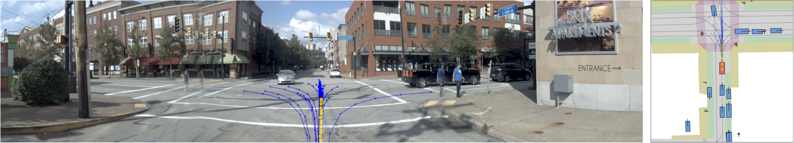

01representation
TC Semantic Token Compressor
A scene-level router softly mixes six active SwiGLU experts over the camera registers. TC refines 64 tokens; it does not perform the initial token reduction.
Vision-based end-to-end driving · NAVSIM
Scene-Conditioned Registers and
Coarse-to-Fine Trajectory Scoring
Keep trajectory generation compact. Give each proposal the local visual evidence needed for scoring.

Illustrative NAVSIM-v1 scene. The selected example is qualitative, not a closed-loop safety result.
01 / Overview
The generator reads a compact scene memory. The scorer uses the same memory alongside pooled image patches to distinguish nearby proposals. Training-only augmentation supplies additional motion alternatives without changing inference.
02 / Method
CoFiDrive has three connected operations. They change the representation, the scoring evidence, and the scorer's training set respectively.
A scene-level router softly mixes six active SwiGLU experts over the camera registers. TC refines 64 tokens; it does not perform the initial token reduction.
Each candidate attends to refined scene tokens and pooled patch features. A candidate-dependent gate fuses the two responses before score prediction.
Top-ranked proposals seed acceleration and yaw-rate perturbations. Bicycle-model rollouts expand auxiliary scorer training; inference remains at 64 proposals.
Inference stays fixed. CSA and PDM target computation are absent at test time. The same CCS ranks the generator's original 64 proposals.
03 / Planning gallery
Explore 16 matched examples from Appendix C: straight driving, left turns, right turns and additional maneuvers. Each planner generates and scores its own proposals.
Appendix C · NAVSIM-v1 navtest
Proposals Selected path White reference, where shown. Select an image to enlarge it.
04 / Attention explorer
Compare the original image, registers 0, 4, 8 and 12, or their mean map. Each panel is extracted at its source resolution. Warmer colors indicate higher displayed attention.
Appendix C · Surround-view register attention. These displayed maps illustrate attention patterns in the selected scene.
05 / CSA trajectory explorer
Inspect five saved trajectory sets. Switch the original and augmented candidates on or off, then reveal the eight future poses. Coordinates come from the saved arrays.
The auxiliary list has 256 entries. Slots can contain a valid perturbation or a seed fallback. CSA is used during training.
Ego-frame coordinates in meters; equal scale on both axes. Playback reveals future waypoints, not a recorded driving video.
Source: saved augmentation visualization caches. The explorer displays existing trajectories; it does not run the planner or recompute benchmark scores.
06 / Results
All reported models train for 10 epochs. NAVSIM-v1 uses PDMS; NAVSIM-v2 NavHard uses the two-stage EPDMS protocol. Higher scores are better.
PDMS · train85k
mean of three training seeds
PDMS · trainval103k
10-epoch training
EPDMS · two-stage protocol
10-epoch training
Ablation explorer
| Configuration | PDMS |
|---|
NavHard metric breakdown
CoFiDrive vs the local DrivoR reproduction, both trained for 10 epochs. These values are distinct from DrivoR's published result.
| Metric | DrivoR | CoFiDrive | Difference (points) |
|---|
Main paper, Table 2. Components improve or decline separately; aggregate EPDMS is not a uniform improvement across all measures. Metric definitions and protocols ↗
TC, CCS and CSA; tensors, gradient paths and the corresponding implementation.
02Main results, all ablation groups, NavHard metrics and comparison conditions.
03How to read the gallery, inspect saved trajectories and generate attention maps.
04Data preparation, training, checkpoint evaluation and configuration checks.
07 / Documentation
Hydra agent configs, training and evaluation entry points, setup instructions and selected manuscript figures are packaged with the release. The benchmark datasets and pretrained weights are obtained separately.